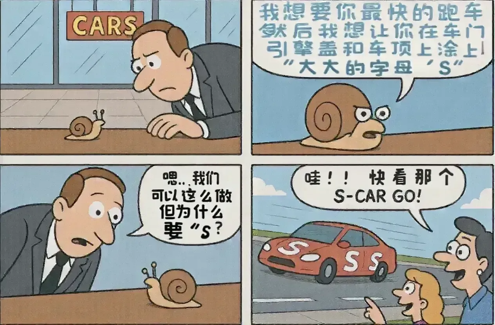
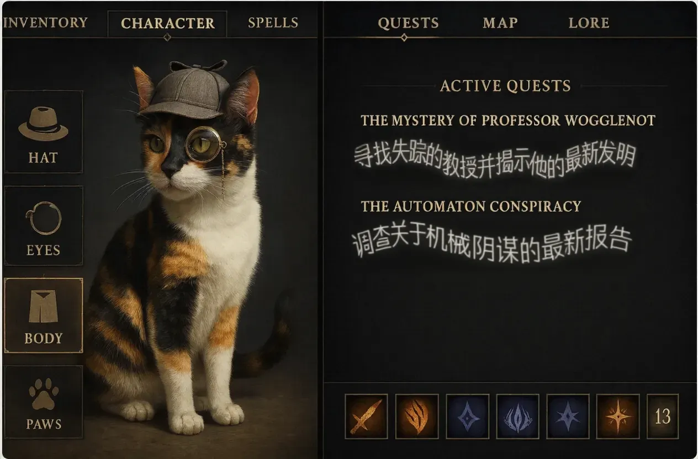
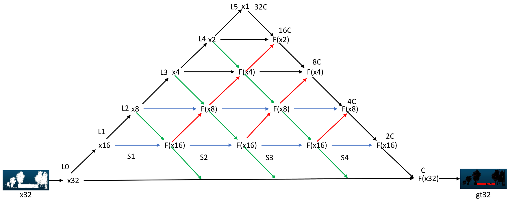
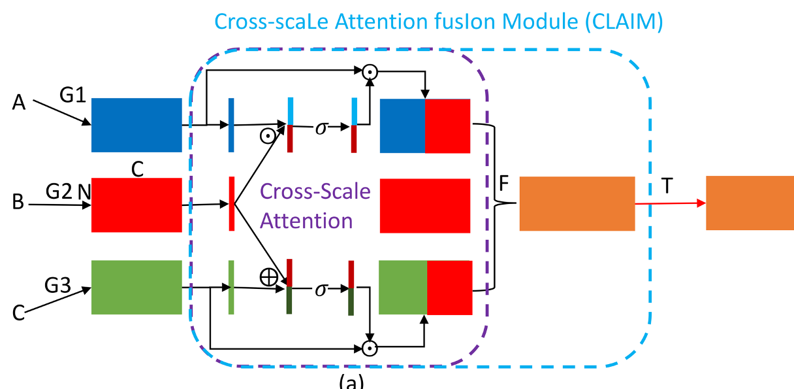

Rui Lan
I am a computer vision engineer at alibaba, Beijing, where I work on deep learning, model compression, and computer vision, etc. Before that, I did my masters and bachelors at school of mechanical engineering, SCUT.
News
09/2025, AIGC is applied to advertising search listings. Contributed to four articles, with FLUX-Text receiving more than 300 stars.
02/2025, The release of wiki and video content in AMAP.
06/2024, The AIGC startup project for "one-click video creation" delivered a demo in just two months.
04/2024, AR and multimedia navigation are now available at Workers Stadium, airports, and railway stations.
12/2023, The unmanned railway production line project has been implemented.
03/2023, A small model is deployed on millions of daily active devices, covering over 90% of the road network, and, together with a cloud-based model, enables T+1 high-precision map feature updates.
04/2022, 1 paper has been accepted by CVPR 2022.
07/2021, I join the alibaba, Beijing.
05/2020, 1 paper has been accepted by APPL OPTICS.
08/2019, I am an intern at SenseTime, Shenzhen.
10/2019, 1 paper has been accepted by IEEE T INSTRUM MEAS.
Recent Projects
AIGC Project in Advertising Search Listings
AIGC is applied to advertising search listings. Contributed to four articles, with FLUX-Text receiving more than 300 stars.
 
"One-Click Video Creation" Startup Project
The AIGC startup project for "one-click video creation" delivered a demo in just two months.
The AR Project
AR and multimedia navigation are now available at Workers Stadium, airports, and railway stations.
The Railway Project
The unmanned railway production line project.
Discover Changing Elements
Discover hanging elements in HD map using Poor computational performance devices.
Object Reconstruction
Mapping and navigating in a hectic word.
Pyramid Architecture for Multi-Scale Processing in Point Cloud Segmentation
 
We present a tri-directional pyramid architecture to process and fuse multi-scale information for point cloud segmentation.
Research
Conference Papers:
- Pyramid Architecture for Multi-Scale Processing in Point Cloud Segmentation
Dong Nie, Rui Lan, Ling Wang, Xiaofeng Ren
CVPR 2022 | paper
Journal Papers:
- Robust seam tracking via a deep learning framework combining tracking and detection
Yanbiao Zou, Rui Lan, Xianzhong Wei, Jiaxin Chen
APPL OPTICS 2020 | paper
- An end-to-end calibration method for welding robot laser vision system with deep reinforcement learning
Yanbiao Zou, Rui Lan
IEEE T INSTRUM MEAS 2019 | paper
Awards
高德--鲜度更新方案青云奖
2018-2021, Scholarship for Graduate Students
2014-2018, Scholarship for Undergraduate Students